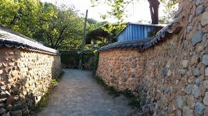

Cứ mỗi lần Xuân về tự nhiên tôi lại nhớ đến những hình ảnh hồi xưa còn bé như không khí se lạnh và những chú chim én liệng dọc theo xóm nhỏ.
Hồi đó, gia đình tôi ở xóm "gốc cây sung", cái xóm nhỏ ngay ngã ba Minh Phụng và Bình Thới ( thuộc quận 11 mà hồi đó còn là quận 6 ). Đầu hẻm là nhà ông Ba Đê, căn nhà rất rộng có vườn tược chung quanh và có cây sung cổ thụ rất to nên xóm nhỏ chúng tôi gọi là xóm gốc cây sung. Bà Ba Đê bán xôi màu xanh có nhưn đậu xanh quết rất ngon và thường kêu chị Hai tôi qua mở hàng vì bà cho là chị Hai tôi mở hàng bà sẽ bán rất đắt khách, có hôm còn kêu qua cho mà hổng lấy tiền để bà lấy cái hên, cái may mắn trong việc mua bán ngày hôm đó. Gần cuối xóm là xe nước đá nhận của chú Ba xe ba gác người Hoa, chúng tôi thường chạy xuống đó mua đá nhận vừa đi vừa mút mút, hút hút thú vị lắm. Có hôm chú Ba đánh đòn đứa con trai lớn hơn tôi một vài tuổi, anh chàng vừa khóc vừa bào đá bán cho chị em tôi và vừa hỉ mũi rột roẹt xong đưa tay nhận đá bào tỉnh bơ làm chị em tôi nhìn nhau há hốc mồm chết khiếp......

Con hẻm nhỏ ấy chỉ có vài chục nóc gia nhưng là hẻm lớn, xe hơi có thể chạy thẳng vô vì cuối hẻm có hãng làm miến của người Hoa, sáng nào tôi cũng thấy có xe ngựa thồ đến chở cả xe vỏ đậu xanh từ hãng làm miến đó. Xóm nhỏ chỉ đến hãng làm miến là hết, sau hãng là những sân phơi bún khô ( loại từng bánh bún khô vuông vuông ), những sân cỏ này ăn thông với sân phơi của những hãng khác có thể nhìn thấu qua khu đường 46, và trong sân cỏ phơi bún này có những cây trâm mà thỉnh thoảng chúng tôi đi hái về ăn.
Hẻm nhỏ và ngắn nên những chú chim én liệng qua tôi thường nhìn theo khi nó mất hút ngoài đầu ngõ, những cánh én bé nhỏ nhưng bay rất nhanh và rất thấp ngang tầm cỡ bọn trẻ con chúng tôi, và như ông bà thường nói "én liệng", chúng liệng qua liệng lại thoăn thoắt nhìn rất vui mắt, chỉ tiếc là sau này tôi không thấy chim én về thành phố nữa, hoặc là chỗ mới của gia đình chúng tôi ở chim én không bay qua.
Trò chơi tuổi thơ của chúng tôi thời ấy là những viên bi, cọng thun, hình nhỏ được cắt ra có cùng kích cỡ, bao thuốc lá xếp hình tam giác, nắp những chai bia, chai nước ngọt...v.v....Còn các trò chơi khác thì cũng giống như ở khắp nơi trên toàn miền Nam thời đó như tạt lon, đánh khăng.....Nhưng thích nhứt vẫn là những trò chơi Tết như đốt pháo, đào lỗ đốt khí đá....Tôi còn nhớ một kỷ niệm về đốt pháo với thằng bạn nhà kế bên, vì sân phơi bún rất rộng nên trẻ con chúng tôi thường rủ nhau ra đường cống thoát nước để "thải chất cặn bã" cho thoải mái, hôm đó hắn gọi tôi ra đồng chung cho vui...đang ngồi nói chuyện thì hắn nói là "tao có pháo, mình thử cắm vô c** rùi đốt nghen", tôi giựt mình: "ý, đừng chơi dại nghen mậy", nhưng nó vừa nói thì tay nó làm liền, báo hại tôi không kịp kéo quần lên mà cứ thế chàng hảng mà ráng chạy cho nhanh, tôi nghe cái "oành" bèn nhìn lại thì thấy thằng bạn cũng đang nhìn tôi mà mặt thay vì cười nhưng hắn lại méo xẹo vì phân bắn tung toé từ đầu xuống chân......hehe....Thiệt là hú hồn vì tôi đã cao chạy xa bay tránh được cái tai hoạ ngày Xuân của thằng bạn.
Sau nhà tôi cũng là sân phơi bún to lớn mà chúng tôi hay chơi thả diều và bây giờ là Công đoàn quận quận 11, hồi ấy đường Bình Thới còn hoang vu lắm, từ trường đua Lê Đại Hành quẹo trái qua đường Bình Thới thì chỉ có một dã nhà hai bên đường chạy xuống xưởng đúc Nguyễn Văn Điệp ( bây giờ là xưởng đúc số 1 ), qua xưởng đúc là vài căn nhà của người Hoa là bắt đầu có những bãi đất trống ngút mắt. Phía sau xưởng đúc là nguyên một vườn hoa lài thiệt là to lớn, mà mỗi sáng các chị em phụ nữ đeo gùi sau lưng đi hái hoa lài cười nói râm ran. Từ ngoài đưòng Bình Thói quẹo phải vô đường Ông Ích Khiêm hồi xưa chỉ là đường đất đỏ chưa có tên và cũng chỉ có lưa thưa nhà cửa chứ không như bây giờ, chạy thẳng đường đất đỏ ấy sẽ ra tới những khu trồng rau cải, xà lách soong của người Triều Châu, cứ mỗi sáng là có một bác người Hoa gánh hai thùng gỗ đầy phân đi ngang bốc mùi rất khó chịu, trẻ con chúng tôi thường rao hò chế diễu: " Hủ nhà bô thúi thúi à "............khiến đôi khi bác ấy bực mình hạ quang gánh xuống rượt bọn tôi chạy hoảng loạn.....hehe......nghĩ lại thương cho những cảnh cơ cực mà người trồng trọt thời bấy giờ không đủ điều kiện như hiện nay.
Xóm "gốc cây sung" của chúng tôi bây giờ vẫn còn nhưng toàn người xa lạ, và những đồng trống phơi bún đã chia lô dựng nhà chi chít. Đường Minh Phụng hồi xưa chưa có, cũng chỉ là đường đất, ngay giữa ngã ba có cái hồ nước rất to, giữa hồ có mỏm đất mà người ta nói là mồ mả của quan hay nhà giàu có thời xưa. Khi phóng đường Minh Phụng họ đã lấp cái hồ đó và làm một con lộ lớn là đại lộ Minh Phụng chạy thẳng qua Cây Gõ. Đối diện hẻm "gốc cây sung" phía bên kia đường cũng là khu đất trống bạt ngàn, có thể nhìn suốt qua khu vực Đầm Sen bây giờ, Trong khu đất trống ấy cũng có một gò đất to, sau đó có người đến đào xới và bốc mộ, thì ra là mộ phần của một viên quan thời nào tôi không rõ, khi cạy nắp quan thì thấy nguyên vẹn hình hài vị quan nhưng chỉ giây lát sau hình như do không khí hoặc gió chi đó mà hình hài vị quan ấy tan thành tro chỉ còn lại ít xương, quần áo, mũ và kiếm........Sau đó người ta xây dựng nhà máy nước đá Nguyễn Châu, có đường xe tải chạy vào rộng lớn, bọn trẻ con chúng tôi thường ra đấy chơi đánh khăng, và sau đó nữa thì hãng nước đá đã trở thành hãng đông lạnh xuất khẩu số 1, và những khu đất trống cũng nhanh chóng có nhà cửa dân cư chen chúc.
Cũng đã hơn nửa thế kỷ, vật đổi sao dời..........nhưng mỗi lần Tết đến tôi lại chỉ nhớ đến không khí Tết của cái xóm nhỏ "gốc cây sung" mà chẳng hiểu tại sao, nhớ nhứt là cái lòng dạ nao nao trong không khí se se lạnh có từng con én liệng qua liệng lại trong con hẻm thân thương mà có lẽ bây giờ chẳng còn ai là người quen trong đó nữa............
Na.
Cuối tuần rảnh quá viết lung tung......
Feb, 24/2018